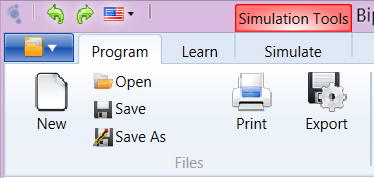

Displays information about the Architecture and Organization of BIP processors, Portugol description language and information system functionality.
Has the following features:
There are shortcut keys for faster access to resources. To view the shortcuts, click "Alt". They are shown on their respective buttons.